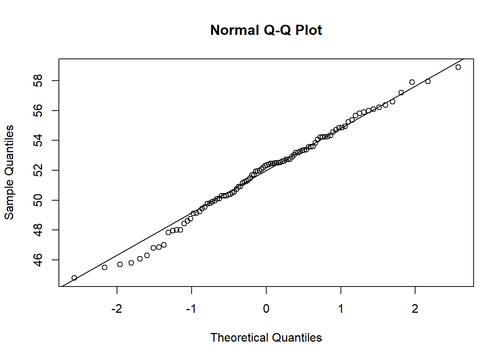
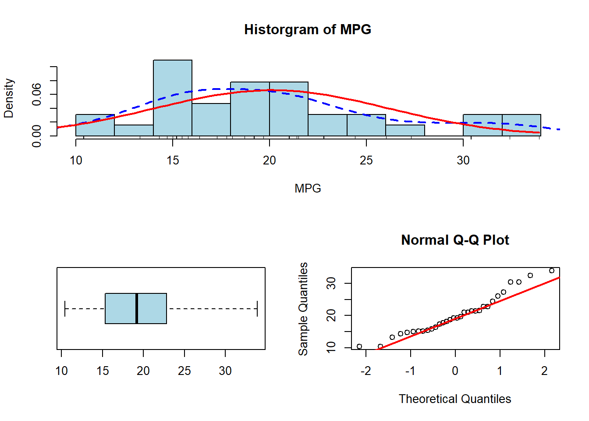

dotchart(mtcars$cyl, main="Dot Plot: Discrete Data", xlab="Cylinders")15 Visualizations
15.1 Quantitative Visualizations
Creating visualizations may help one to assess and describe the data more thoroughly. Doing so will allow one to potentially see new relationships and patterns that were not noticed in the initial summary. Luckily for us, R has several powerful tools to generate graphics. In this course, we will be using the Base graphics library, but in future courses, we will introduce the more powerful ggplot2 library.
15.1.1 Dot Plots
A simple way to visualize quantitative data would be to produce a dot plot. In this type of plot, we use a dot to represent one variable. The number of dots at a value represents the frequency at that value. This idea is similar to a bar plot/histogram in that the height of the bars represents the frequency of the category. For the dot plot though, the y-axis does not have any meaning. A benefit of this visualization technique is that it allows us to identify the mode and median if we are working with smaller datasets. A downside though is that it is difficult to read with large quantities of data. Below is an example of using a dot plot to visualize both discrete and continuous data:
In the visualization above we can see the number of occurrences for each category. We can also see that 8 cylinders is the most common category since it has the most dots. We could do something similar with continuous data as well, but the only difference is that we will not be able to tell which value occurs the most. We will be able to identify where the values cluster though. For instance, in the visualization below, I can see that the majority of the values are between 15 and 25. Again, the y-axis does not provide any information.
dotchart(mtcars$mpg, main="Dot Plot: Continuous Data", xlab="MPG")15.1.2 Histograms
We have already seen how we can visualize quantitative data with histograms, but now we want to see the arguments we can include to improve the visualizations. One thing we might consider doing is altering the color of the boxes (“col”) or altering the color of the border (“border”). We can also change the title of the plot (“main”) and the label of the x and y-axis (“xlab” and “ylab”). Below is an example of a few things we can do:
hist(mtcars$mpg, col="lightblue", border="red",
main="Histogram of MPG", xlab="MPG")As we have discussed before, the histograms allow us to visualize quantitative continuous variables (or quantitative discrete if there are a large number of possibilities) with the height of the bar representing the number of values within the range. R will automatically choose the number of bins and the width of the bins, but we could alter that on our own if we wanted using the “breaks” argument. Passing it the number of categories we want will be considered a suggestion and it will choose a value near there to make the numbers work out nicely. If we pass it a vector (just like the cut() function) then it adhere to the cuts:
hist(mtcars$mpg, breaks=10, col="lightblue",
border="red", main="Histogram of MPG", xlab="MPG")hist(mtcars$mpg, breaks=c(10,14,22,25,34), col="lightblue",
border="red", main="Histogram of MPG", xlab="MPG")15.1.3 Density Plots
Another useful plotting mechanism is the density plot. This plot will represent the distribution of the data as a continuous function. R is essentially telling us what distribution it thinks the data is from. We have seen before how we can draw a density line over a histogram using the lines() command, but we can also just plot the density line by itself:
plot(density(mtcars$mpg))We could add some new elements to the visualization by changing the limits of the x and y-axis (“xlim” and “ylim”) as well as using the polygon() function to “fill-in” the color below the density line:
plot(density(mtcars$mpg), xlim=c(5,38), ylim=c(0,.08), main="Density Plot")
polygon(density(mtcars$mpg), col="lightblue", border="red")15.1.4 Combining Histograms with Density Plots
We have seen how we can add the density line on top of the histogram before. Remember that when combining the histogram and the density line, we need to specify in the histogram that frequency is false. In this section, we will introduce a few other arguments which will assist us in presenting the data.
hist(mtcars$mpg, breaks=10, col="lightblue", freq=FALSE)
lines(density(mtcars$mpg), col="red")
We should note that whenever we start to plot something in R we will need to create the “canvas” first. Essentially, we need to use a plot(), hist(), barplot(), or other function to make this canvas. Then we can use lines() to create a visualization on top of it. So, if you were to clear the “Plot” pane and tried to do “lines(density(mtcars$mpg))” you would get an error since there is no canvas for it to draw this on.
We can add an additional element to the visualization called a “rug”. What this will do is put a line at the bottom of the graphic wherever a data value lines on the x-axis. This will allow us to better see where the data values are. But, if multiple values are at the same spot then we might not be able to tell how many values are there. So, we normally also add a “jitter” to it, which just adds or subtracts a small number to it so that we can see how many values are at a single spot.
hist(mtcars$mpg, breaks=10, col="lightblue", freq=FALSE)
rug(jitter(mtcars$mpg))
lines(density(mtcars$mpg), col="red")15.1.5 Combining Histograms with Normal Curves
We can also plot the Normal Distribution over the histogram, which will allow us to compare the data to data from a normal distribution. We will use the same idea as the density line, except we will first need to generate a sequence of values on the x-axis and then find the corresponding y-value using the density of the normal distribution. As I have said before, it is OK if we don’t fully understand the code for this part, but we should know how to use it (by altering the variables to the variable we want to plot).
hist(mtcars$mpg, breaks=10, col="lightblue", freq=FALSE)
xfit <- seq(0,max(mtcars$mpg),length=100)
yfit <- dnorm(xfit,mean=mean(mtcars$mpg),sd=sd(mtcars$mpg))
lines(xfit, yfit, col="red", lwd=2)We can combine everything together and plot the histogram, the rug, the density line, and the normal distribution all on the same plot. We can see an example of this below, where “lwd=” signifies the thickness of the line and “lty=” signifies the type of line:
hist(mtcars$mpg, breaks=10, col="lightblue", freq=FALSE)
rug(jitter(mtcars$mpg))
lines(density(mtcars$mpg), col="blue", lty=2, lwd=2)
xfit <- seq(0,max(mtcars$mpg),length=100)
yfit <- dnorm(xfit,mean=mean(mtcars$mpg),sd=sd(mtcars$mpg))
lines(xfit, yfit, col="red", lwd=2)In the plot above, we can see the density of the data with the dashed blue line and compare it to the red line which is the normal distribution.
15.1.6 Box Plots
Box Plots will allow us to visualize the data using the quantiles and the IQR. This type of visualization is also called a “Box and Whisker” plot. The “whiskers” will extend out to Q1-1.5*IQR and Q3+1.5*IQR. This will allow us to identify any outliers which may be present. The outliers will be represented as circles if any exist. We can also use the “horizontal” argument if we wish for the boxplot to be aligned horizontally. Like all of the other visualizations, we can alter the color and the labels using similar commands.
boxplot(mtcars$mpg, col="lightblue", horizontal = TRUE)15.1.7 Quantile-Quantile Plots (QQ Plot)
finally, the last big visualization we want to consider is the Quantile-Quantile Plot. This is often abbreviated as QQ Plot. This will allow us to compare two different distribution’s quantiles. We will normally do this when we want to compare data to the normal distribution to see if the data looks to be normal. The code below shows this example, and what we are looking for is the data to follow the 45-degree line. If it adheres to the line then we have even more proof of normality.
data <- rnorm(100,52,3)
qqnorm(data)
qqline(data)
In the plot above we can see that it follows the line fairly well (which is good since it is a normal distribution!). If it has a concave-up C (backward C) then it would indicate a right-skewed distribution. If it has a concave-down C (upside down C) then it would indicate a left-skewed distribution. And finally, if it has an S pattern then the data might be bi-modal. We will see a few of these examples below.
15.1.8 Plotting Layouts
We can combine different plots using the layout() function. This will allow us to see multiple different plots at the same time. We will indicate where plot 1, plot 2, etc. will go. These will then be filled in whenever we use a plotting command.
layout(matrix(1:2, nrow=1))
layout.show(2)Now we will see how we can use 2 different plots at the same time. We should also notice how the QQ plot looks when our data is symmetrical or skewed.
library(openintro)hist(babies$bwt, col="lightblue", main="Symmetric Data")
qqnorm(babies$bwt)
qqline(babies$bwt, col="red", lwd=2)hist(mlb_teams$triples, main="Right Skewed", col="lightblue")
qqnorm(mlb_teams$triples)
qqline(mlb_teams$triples, col="red", lwd=2)hist(mlb_teams$hits, main="Left Skewed", col="lightblue")
qqnorm(mlb_teams$hits)
qqline(mlb_teams$hits, col="red", lwd=2)hist(mlb_teams$homeruns, main="Left Skewed", col="lightblue")
qqnorm(mlb_teams$homeruns)
qqline(mlb_teams$homeruns, col="red", lwd=2)We can alter the plot even more if we want to include another type of plot as well. We could have as many as we would want really, but it is typical to only plot between 1 and 4 things in a single window. The example below plots it as a single thing on the top and 2 things on the bottom:
layout(matrix(c(1,1,2,3),2,2,byrow=TRUE))
hist(mtcars$mpg, breaks=10, col="lightblue", main="Historgram of MPG",
xlab="MPG", freq=FALSE)
rug(jitter(mtcars$mpg))
lines(density(mtcars$mpg), col="blue", lty=2, lwd=2)
xfit <- seq(0,max(mtcars$mpg),length=100)
yfit <- dnorm(xfit,mean=mean(mtcars$mpg),sd=sd(mtcars$mpg))
lines(xfit, yfit, col="red", lwd=2)
boxplot(mtcars$mpg, col="lightblue", horizontal = TRUE)
qqnorm(mtcars$mpg)
qqline(mtcars$mpg, col="red", lwd=2)
We can get back to the original plotting window by using the following command:
par(mfrow=c(1,1))15.2 Qualitative Visualizations
We have seen several ways we can visualize quantitative data with dot plots, histograms, density plots, and box plots. However, we have to use a different approach if we wish to visualize qualitative data since these are categories and not necessarily numbers. One of the easiest (and potentially the best) ways to describe categorical data is to either use counts or proportions. Since it does not necessarily make sense to find the mean of categorical data, we just want to count the number of observations in the category
15.2.1 Frequency Tables
We can calculate the number of values in each category relatively easily using the table() function. We have already seen this command before, and have used it to summarize categories (and quantitative discrete when there are relatively few possible outcomes). Below is an example of this function using the ‘mlb_players_18’ dataset from the ‘openintro’ library:
table(mlb_players_18$position)
1B 2B 3B C CF DH LF P RF SS
59 83 73 115 79 6 70 642 76 67 We can place the table function within the addmargins() function to print out the total of all of the counts.
addmargins(table(mlb_players_18$position))
1B 2B 3B C CF DH LF P RF SS Sum
59 83 73 115 79 6 70 642 76 67 1270 If instead of counts we wanted to calculate the proportion of values in each category, we can do that by dividing the table by the number of observations we have. This can easily be done since everything in R is a vector. I have included the round() function and selected 3 decimal places since we do not need to be too precise:
round(table(mlb_players_18$position)/length(mlb_players_18$position),3)
1B 2B 3B C CF DH LF P RF SS
0.046 0.065 0.057 0.091 0.062 0.005 0.055 0.506 0.060 0.053 Likewise, if we wanted the percentage of values in each category we could multiply the expression above by 100 and it will convert the values from proportions to percentages. Another way we could carry out this same task would be to use the prop.table() function. It may be hard to memorize all of these functions, but just remember that there are multiple ways to do things in R, so we can use whatever we are most comfortable with:
round(prop.table(table(mlb_players_18$position)),3)
1B 2B 3B C CF DH LF P RF SS
0.046 0.065 0.057 0.091 0.062 0.005 0.055 0.506 0.060 0.053 addmargins(round(prop.table(table(mlb_players_18$position)),3))
1B 2B 3B C CF DH LF P RF SS Sum
0.046 0.065 0.057 0.091 0.062 0.005 0.055 0.506 0.060 0.053 1.000 addmargins(round(prop.table(table(mlb_players_18$position)),3))*100
1B 2B 3B C CF DH LF P RF SS Sum
4.6 6.5 5.7 9.1 6.2 0.5 5.5 50.6 6.0 5.3 100.0 15.2.2 Pie Chart
One common way to visualize categorical data is through the use of a pie chart. This type of visualization allows us to compare the percentages across categories. While this is the most popular method, it is often hard to compare categories, especially when there are a large number of levels. Doing a pie chart in R is a little challenging, as the user must pass the function the percentage of each category and not just the table. Additionally, to get meaningful labels, the user must create those as well:
table_cat <- table(mlb_players_18$position)
percent_cat <- round(prop.table(table_cat),3)*100
my_labels <- paste0(names(percent_cat), ": ", percent_cat, "%")
pie(table_cat, labels=my_labels, main="Pie Chart of Positions Played",
col=rainbow(length(table_cat)))As we can see from the visualization above, it is hard to read a pie chart when there are a lot of different categories. We could try to simplify it though by making a new column and combining a few categories:
mlb_players_18 <- data.frame(mlb_players_18)
mlb_players_18$position_cat <- NA
mlb_players_18[mlb_players_18$position %in%
c("1B", "2B", "3B", "SS") ,]$position_cat <- "Infield"
mlb_players_18[mlb_players_18$position %in%
c("LF", "CF", "RF") ,]$position_cat <- "Outfield"
mlb_players_18[mlb_players_18$position=="P",]$position_cat <- "Pitcher"
mlb_players_18[mlb_players_18$position %in%
c("C", "DH"),]$position_cat <- "Other"
table_cat <- table(mlb_players_18$position_cat)
table_cat
Infield Other Outfield Pitcher
282 121 225 642 percent_cat <- round(prop.table(table_cat),3)*100
my_labels <- paste0(names(percent_cat), ": ", percent_cat, "%")
pie(table_cat, labels=my_labels, main="Pie Chart of Positions Played",
col=rainbow(length(table_cat)))15.2.3 Fan Plots
Another way we can visualize categorical data is to use a Fan Plot. This method is comparable to the pie chart as the size of the sections relates to the percentage of values in the category. The main difference though is that it overlays the visualizations, allowing one to easily compare the sizes of the different categories. The function relies on the ‘plotrix’ package, which may need to be installed before using it if is the first time using it.
library(plotrix)
table_cat <- table(mlb_players_18$position_cat)
percent_cat <- round(prop.table(table_cat),3)*100
my_labels <- paste0(names(percent_cat), ": ", percent_cat, "%")
fan.plot(table_cat, labels=my_labels,
main="Fan Plot of Positions Played", col=rainbow(length(table_cat)))15.2.4 Bar Plots
While histograms are used for quantitative data, bar plots can be used for qualitative data. We have seen this process before, as we have to pass a table into the barplot() function.
barplot(table(mlb_players_18$position_cat),
col=c("red", "blue", "green", "purple"),
main="Barplot of Positions", xlab="Positions")If there are a large number of categories, the visualization might not print out all of the category names. On the plot below, notice how all of the category’s names are not printed out under the columns due to spacing issues:
barplot(table(mlb_players_18$position),
col=rainbow(10), main="Barplot of Positions")If this happens, we could try making the plot region bigger or condensing our categories (if it makes sense to do so). Another solution would be to include the ‘las=2’ argument, which formats the labels to be perpendicular to the x-axis. This will allow us to see each category name a little easier.
barplot(table(mlb_players_18$position), col=rainbow(10),
las=2, main="Barplot of Positions")15.2.5 Waffle Plot
The Waffle Plot is similar to the pie chart but it creates little squares for each category. The more squares a category has the more observations there are. This easily allows one to compare different groups. It should be mentioned that the squares are scaled by a vector of values (we can decide how much each square is “worth”). For this graphic, we will need the ‘waffle’ package, which may need to be installed before using it if is the first time using it.
library(waffle)
bcnt <- as.vector(table(mlb_players_18$position))
names(bcnt) <- names(table(mlb_players_18$position))
waffle(bcnt/10, rows=8, col=rainbow(10),
title="Waffle Plot of Position Players",
xlab="1 square=10 players")15.2.6 Pareto Chart
The last visualization type we will discuss in this section is the Pareto Chart. This is a chart that is very similar to the bar chart, except the categories are sorted in order from largest to smallest. This allows for the comparison of similarly sized groups. An additional element typically included is the cumulative percentage of occurrences. This will allow you to see what percentage of the observations are in the category or the categories that have come before it. This graphic relies on the `qcc’ package, which may need to be installed before using it if is the first time using it.
library(qcc)
bcnt <- as.vector(table(mlb_players_18$position))
names(bcnt) <- names(table(mlb_players_18$position))
y <- pareto.chart(bcnt,main="Pareto Chart Positions",
xlab="Alignment")We can see this with fewer categories as well and can see the amount in each category plus the percentage of observations in the category and the categories before it.
bcnt <- as.vector(table(mlb_players_18$position_cat))
names(bcnt) <- names(table(mlb_players_18$position_cat))
pareto.chart(bcnt,main="Pareto Chart Positions",
xlab="Alignment")
Pareto chart analysis for bcnt
Frequency Cum.Freq. Percentage Cum.Percent.
Pitcher 642.000000 642.000000 50.551181 50.551181
Infield 282.000000 924.000000 22.204724 72.755906
Outfield 225.000000 1149.000000 17.716535 90.472441
Other 121.000000 1270.000000 9.527559 100.000000